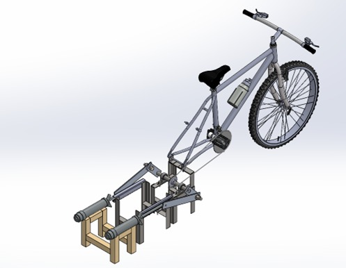

Water Pump
Project in collaboration with Jalisco's (Mexico) Sate Government.

Challenge
This project aimed to provide a reliable water pumping solution for households without access to electricity, using only human pedaling as the energy source. The system needed to deliver sufficient flow rate and head to meet daily water needs while remaining ergonomic, durable, and manufacturable with accessible materials.
Designing a mechanical transmission that efficiently converted human rotational input into linear pumping action, all within the limits of typical human power output, was the central engineering challenge.
Challenge
To address this need, I designed a pedal‑powered pumping system built around a bicycle‑based frame that served as the energy input platform. A chain‑and‑gear transmission amplified torque and controlled rotational speed, while a crank mechanism converted this motion into the linear displacement required to drive a reciprocating pump.
The pump incorporated check valves and corrosion‑resistant materials to ensure consistent flow and long‑term durability. The system was engineered to operate within the typical human power range of 50–150 W, making it practical for sustained use in rural environments.
Engineering Process
The engineering process began with an analysis of human power capabilities, focusing on a pedaling range of 40–60 RPM and sustainable power output between 50 and 150 W. I modeled the full assembly in SolidWorks, including the frame, transmission, crank mechanism, and pump components.
Dynamic simulations were performed to study piston displacement relative to crank angle, angular velocity versus translational speed, and the torque required to overcome hydraulic head. Fluid simulations in Ansys provided insight into flow behavior and velocity distribution within the pump. Material selection prioritized corrosion resistance and structural reliability, with carbon steel used for the transmission and stainless steel for the pump components. Performance validation confirmed that the system could deliver 7.5 L/min at a height of 30 ft.
Results
The final design successfully delivered 7.5 L/min at a 30 ft head using only human power, demonstrating its suitability for off‑grid water supply. The modular architecture allowed for straightforward installation and maintenance, and the system’s materials ensured long-term durability in outdoor environments
I also developed a maintenance plan and proposed instrumentation using pedal RPM sensors, tachometers, and flow meters to monitor performance. The project was presented with full CAD models, technical drawings, and an installation manual, showcasing a complete engineering solution for real‑world community needs.